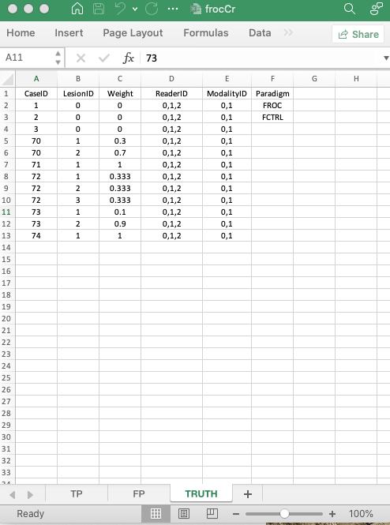
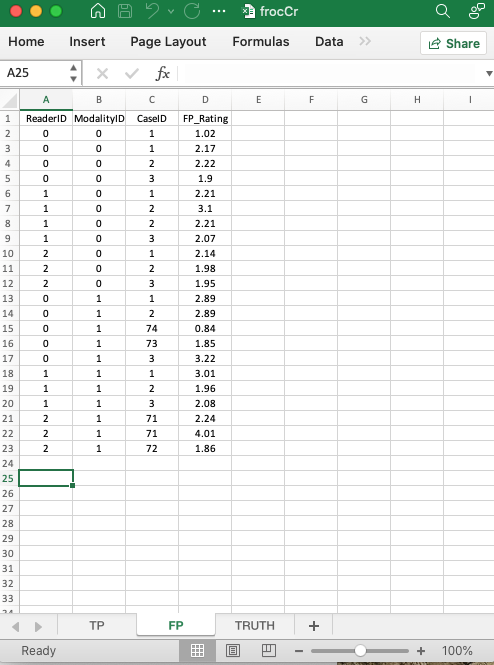
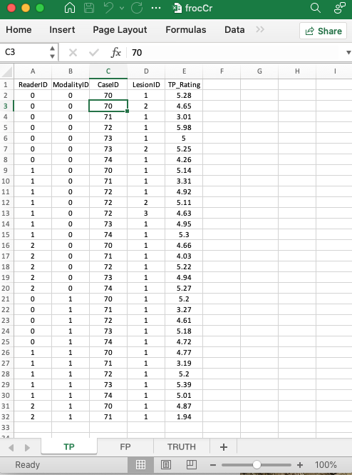

Chapter 18 Excel file and dataset details
18.1 Introduction
- This chapter is included to document recent Excel file format changes and the new dataset structure.
- We illustrate with a toy FROC data file
images/software-details/frocCr.xlsx, in which 3 readers interpret 3 non-diseased and 5 diseased cases using the FROC paradigm. - The Excel file has three worksheets named
Truth,NL(orFP) andLL(orTP). The names are case insensitive. - An image of the
Truthworksheet follows.

18.2 The Truth worksheet
- It contains 6 columns:
CaseID,LesionID,Weight,ReaderID,ModalityIDandParadigm. Excepting the first (header) row, the first three columns must contain numbers and the last three columns must be string formatted. - The
CaseIDfield: the non-diseased cases are numbered with integers:1,2,3; the diseased cases are numbered with integers70,71,72,73,74. It is evident that \(K_1 = 3\), \(K_2 = 5\) and \(K = 8\). The values need not be sequential but they must be unique. - The
LesionIDfield has integers:0denotes a non-diseased case,1denotes the first lesion on a diseased case,2denotes the second lesion on a diseased case,3denotes the third lesion on a diseased case.CaseID1,2,3are non-diseased cases;CaseID70is the first diseased case with two lesions,CaseID71is the second diseased case with one lesion,CaseID72is the third diseased case with three lesions,CaseID73is the fourth diseased case with two lesions andCaseID74is the fifth diseased case with one lesion. - The
ReaderIDfield has a string with three character values “0”, “1”, “2”, i.e.,J= 3. - The
ModalityIDfield has a string with two character values “0”, “1”, i.e.,I= 2. - Note that
ReaderIDandModalityIDcontain text formatted labels. Paradigm: The contents of this field are two stringsFROCandFCTRL(case insensitive, FCTRL stands for a factorial - or fully crossed - study design where each reader interprets all cases in all modalities).
18.3 The structure of a factorial FROC dataset
The following code reads the Excel file into a dataset object x:
- Note that
newExcelFileFormatmust be set toTRUEto read the new Excel format dataset. The default isFALSEwhich reads the original format Excel file with only the first three columns in theTruthworksheet.
The structure of x is shown below.
str(x, max.level = 1)
#> List of 3
#> $ ratings :List of 3
#> $ lesions :List of 3
#> $ descriptions:List of 7- The dataset
xis alistvariable with 3 members:x$ratings,x$lesionsandx$descriptions.
str(x$ratings)
#> List of 3
#> $ NL : num [1:2, 1:3, 1:8, 1:2] 1.02 2.89 2.21 3.01 2.14 ...
#> $ LL : num [1:2, 1:3, 1:5, 1:3] 5.28 5.2 5.14 4.77 4.66 4.87 3.01 3.27 3.31 3.19 ...
#> $ LL_IL: logi NA- There are
K2 = 5diseased cases (the length of the third dimension ofx$ratings$LL) andK1 = 3non-diseased cases (the length of the third dimension ofx$ratings$NLminusK2). x$ratings$NLis a [2, 3, 8, 2] array containing the NL ratings on non-diseased and diseased cases.x$ratings$LLis a [2, 3, 5, 3] array containing the ratings of LLs on diseased cases.x$ratings$LL_ILisNA, this field applies to an LROC dataset (contains incorrect localizations on diseased cases).
str(x$lesions)
#> List of 3
#> $ perCase: int [1:5] 2 1 3 2 1
#> $ IDs : num [1:5, 1:3] 1 1 1 1 1 ...
#> $ weights: num [1:5, 1:3] 0.3 1 0.333 0.1 1 ...x$lesions$perCaseis the number of lesions per diseased case vector, i.e., 2, 1, 3, 2, 1.max(x$lesions$perCase)is the maximum number of lesions per case, i.e.,rmax(x\(lesions\)perCase)`.x$lesions$weightsis the weights of lesions.
x$lesions$weights
#> [,1] [,2] [,3]
#> [1,] 0.3000000 0.7000000 -Inf
#> [2,] 1.0000000 -Inf -Inf
#> [3,] 0.3333333 0.3333333 0.3333333
#> [4,] 0.1000000 0.9000000 -Inf
#> [5,] 1.0000000 -Inf -InfThe weights for the first diseased case are 0.3 and 0.7. The weight for the second diseased case is 1. For the third diseased case the three weights are 1/3 each, etc. For each diseased case the finite weights sum to unity.
str(x$descriptions)
#> List of 7
#> $ fileName : chr "frocCr"
#> $ type : chr "FROC"
#> $ name : logi NA
#> $ truthTableStr: num [1:2, 1:3, 1:8, 1:4] 1 1 1 1 1 1 1 1 1 1 ...
#> $ design : chr "FCTRL"
#> $ modalityID : Named chr [1:2] "0" "1"
#> ..- attr(*, "names")= chr [1:2] "0" "1"
#> $ readerID : Named chr [1:3] "0" "1" "2"
#> ..- attr(*, "names")= chr [1:3] "0" "1" "2"- The
x$descriptions$filenamefor internal use. - The
x$descriptions$typemember is FROC, which specifies the data collection method. - The
x$descriptions$namefor internal use. - The
x$descriptions$truthTableStrmember, for internal use, quantifies the structure of the dataset; it is explained in the next section. - The
x$descriptions$designmember is FCTRL; it specifies the study design. - The
x$descriptions$modalityIDmember is a vector with two elements 0, 1 naming the two modalities. - The
x$readerIDmember is a vector with three elements 0, 1, 2 naming the three readers.
18.4 The truthTableStr member
- For this dataset
I= 2,J= 3 andK= 8. truthTableStris a2 x 3 x 8 x 4array, i.e.,IxJxKx (maximum number of lesions per case plus 1 - theplus 1is needed to accommodate non-diseased cases).- Each entry in this array is either
1, meaning the corresponding interpretation happened, orNA, meaning the corresponding interpretation did not happen.
18.4.1 Explanation for non-diseased cases
Since the fourth index is set to 1, in the following code only non-diseased cases yield ones and all diseased cases yield NA.
18.4.2 Explanation for diseased cases with one lesion
Since the fourth index is set to 2, in the following code all non-diseased cases yield NA and all diseased cases yield 1 as all diseased cases have at least one lesion.
18.4.3 Explanation for diseased cases with two lesions
Since the fourth index is set to 3, in the following code all non-diseased cases yield NA; the first diseased case 70 yields 1 (this case contains two lesions); the second disease case 71 yields NA (this case contains only one lesion); the third disease case 72 yields NA (this case contains only two lesions); the fourth disease case 73 yields 1 (this case contains two lesions); the fifth disease case 74 yields NA (this case contains one lesion).
# all non diseased cases
all(is.na(x$descriptions$truthTableStr[,,1:3,3]))
#> [1] TRUE
# first diseased case
all(x$descriptions$truthTableStr[,,4,3] == 1)
#> [1] TRUE
# second diseased case
all(is.na(x$descriptions$truthTableStr[,,5,3]))
#> [1] TRUE
# third diseased case
all(x$descriptions$truthTableStr[,,6,3] == 1)
#> [1] TRUE
# fourth diseased case
all(x$descriptions$truthTableStr[,,7,3] == 1)
#> [1] TRUE
# fifth diseased case
all(is.na(x$descriptions$truthTableStr[,,8,3]))
#> [1] TRUE18.4.4 Explanation for diseased cases with three lesions
Since the fourth index is set to 4, in the following code all non-diseased cases yield NA; the first diseased case 70 yields NA (this case contains two lesions); the second disease case 71 yields NA (this case contains one lesion); the third disease case 72 yields NA (this case contains two lesions); the fourth disease case 73 yields 1 (this case contains three lesions); the fifth disease case 74 yields NA (this case contains one lesion).
# all non diseased cases
all(is.na(x$descriptions$truthTableStr[,,1:3,4]))
#> [1] TRUE
# first diseased case
all(is.na(x$descriptions$truthTableStr[,,4,4]))
#> [1] TRUE
# second diseased case
all(is.na(x$descriptions$truthTableStr[,,5,4]))
#> [1] TRUE
# third diseased case
all(x$descriptions$truthTableStr[,,6,4] == 1)
#> [1] TRUE
# fourth diseased case
all(is.na(x$descriptions$truthTableStr[,,7,4]))
#> [1] TRUE
# fifth diseased case
all(is.na(x$descriptions$truthTableStr[,,8,4]))
#> [1] TRUE18.5 The non-lesion localization (NL or FP) ratings
These are found in the FP or NL worksheet:

- The common vertical length is 22 in this example.
ReaderID: the reader labels:0, 1,2, as declared in theTruth` worksheet.ModalityID: the modality labels:0or1, as declared in theTruthworksheet.CaseID:1,2,3,71,72,73,74, as declared in theTruthworksheet; note that not all cases have NL marks on them.
NL_Rating: the ratings of non-diseased cases.
18.6 The lesion localization (LL or TP) ratings
These are found in the TP or LL worksheet, see below.

- This worksheet has the ratings of diseased cases.
ReaderID: the reader labels: these must be from0,1,2, as declared in theTruthworksheet.ModalityID:0or1, as declared in theTruthworksheet.CaseID: these must be from70,71,72,73,74, as declared in theTruthworksheet; not all diseased cases have LL marks.
LL_Rating: the ratings of diseased cases.